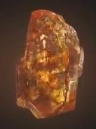
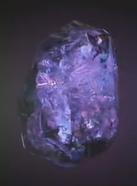
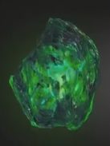
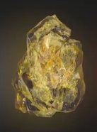
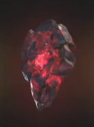

| name | color | info | img |
| камень души | Оранжевый | возможно опаснейший из всех, этот камень обладает разумом и испытывает голод, утолить который могут только души. Он позволяет своему владельцу похищать, подчинять и изменять души живых или мёртвых. Адам Уорлок был единственным хранителем этого камня в течение многих лет и чувствовал ответственность за все те души, которые он сам забрал. Как ни странно, камень является вратами в идиллическую карманную вселенную. |  |
| Камень космоса | Голубой | камень позволяет своему владельцу существовать в любом окружающем пространстве, будь то космос или подводные глубины; перемещать объекты, себя и других существ в любой уголок вселенной; деформировать и перестраивать пространство. | |
| камень силы | Фиолетовый | камень имеет доступ ко всей силе и энергии, когда-либо существовавшей или существующей в будущем, питает другие камни и усиливает их эффекты. Камень позволяет владельцу дублировать практически любую физическую сверхчеловеческую способность и становиться неуязвимым, а потому и непобедимым, используя одну лишь сплошную силу. |  |
| камень времени | Зеленый | камень даёт своему обладателю полную власть над временем. С его помощью становятся доступными или видимыми прошлое, настоящее и будущее. В совершенстве владеющий камнем может использовать его силу как оружие, заманивая в ловушки врагов или даже целые миры в бесконечные петли времени. Камень также может заставить объекты и существ физически возвращаться к юному возрасту или стареть. |  |
| камень разума | Жёлтый | самый разрушительный среди всех. Камень позволяет увеличивать силу сознания владельца и получать доступ к мыслям и снам других существ. Поддерживаемый Камнем силы, с его помощью возможно получить доступ одновременно ко всем существующим разумам. Камень также может выпускать внутренних демонов, кем бы они ни были в других вселенных, и загонять их обратно. |  |
| камень реальности | Красный | единственный камень который был в текучем виде. Он позволяет своему владельцу осуществлять любые желания, даже если эти желания противоречат научным законам. Если неосторожно его использовать, камень может привести к бедствию. Затрагивая границу реальности, он вызывает катастрофические повреждения, которые могут быть изолированы только силой Камня пространства, Камня души и Камня силы. |  |
| камень эго | седьмой камень содержит сознание Немезиды, и сливаясь с остальными камнями превращается в космическое существо, неотъемлемой частью которого однажды были все эти камни. Камень также позволяет управлять энергией измерений. В отличие от всех остальных камней, этот был найден в Ультравселенной, когда Локи попытался украсть остальные камни у их владельцев. Камень даёт своему обладателю власть над измерениями и даже над измерением Х. |